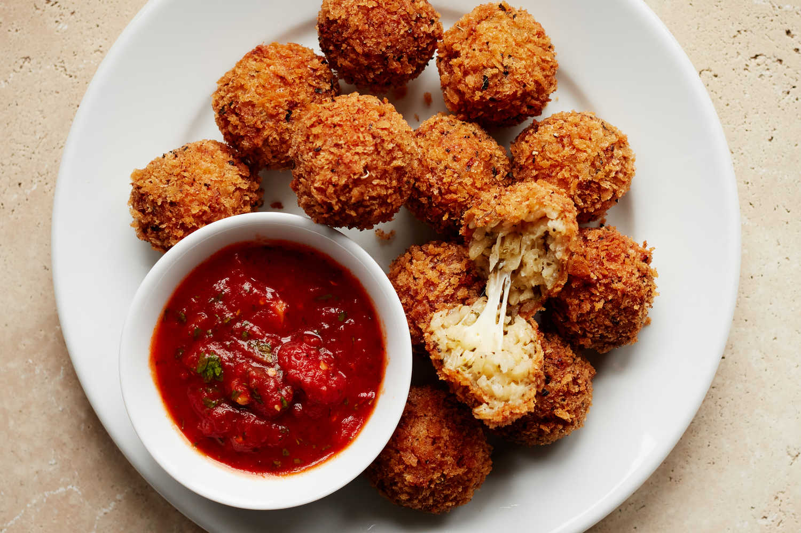

Arancini

What is Arancini?
Arancini are Italian rice balls that are stuffed with cheese, meat, or vegetables, coated in breadcrumbs, and deep-fried until crispy. They originated in Sicily and are often served as a snack or appetizer.
What ingredients do you need?
- Short grain Arborio rice
- Broth
- Butter
- Onion
- White Whine
- Parmesan cheese
- Mozzarella cheese
- Breadcrumbs
- Flour
- Eggs
- Vegetable Oil
** Optional ingredients include: ground beef, peas, mushrooms. **
What are the steps to making Arancini?
- First cook the Arborio rice in broth until its tender.
- Then saute onions in butter until they're soft and add them to the rice along with white whine and Parmesan cheese.
- Let mixture cool, then shape it into balls around cubes of mozzarella cheese.
- Dip balls in flour, then beaten eggs, then breadcrumbs.
- Finally deep fry the balls in hot oil until they're golden brown and crispy.
Complete! Enjoy!
Back to Main Menu!